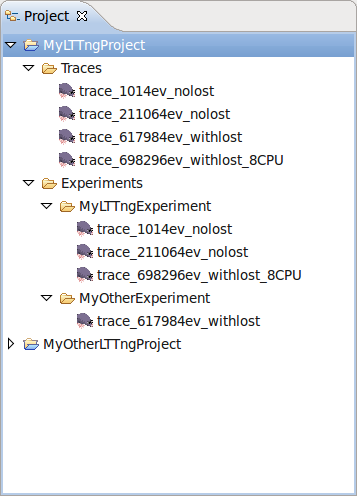
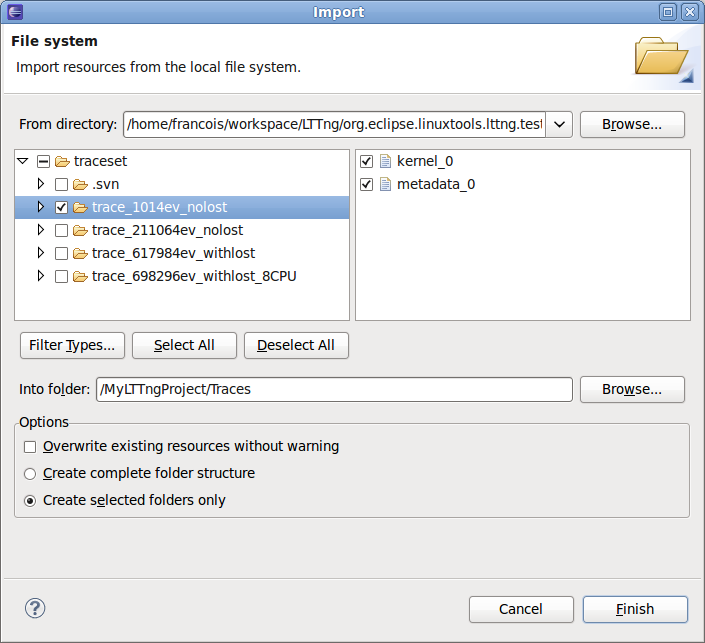
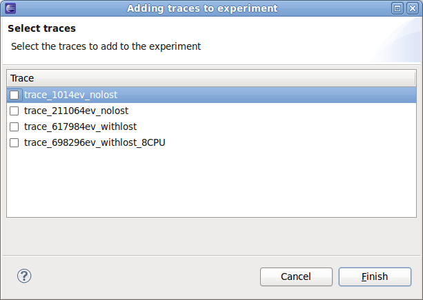

The project view displays the LTTng projects of the current workspace.
Two folders are always present: Traces and Experiments.

The Traces folder holds the set of traces available for experiments.
Traces are imported in the LTTng project using an import wizard triggered by a
context menu.
Note: An LTTng trace is actually a composite of multiple channel traces grouped under a folder. It is the folder that has to be imported.

The Experiment folder holds the set of experiments of the project.
Experiments are created from the Experiment context menu and are
configured from the experiment's context menu.
